건축설비기사 (2021-03-07 기출문제)
1과목: 건축일반
1. 상부는 완만한 경사로, 하부는 급경사로 처리한 2단으로 경사진 지붕은?
- 박공지붕
- 왼쪽지붕
- 톱날지붕
- 맨사드(mansard)지붕
(정답률: 76%)

2. 호텔건축의 조닝(zoning)에서 공간적으로 성격이 나머지 셋과 다른 하나는?
- 클로크 룸
- 보이실
- 린넨실
- 트렁크 실
(정답률: 72%)
3. 사무실 배치방식에서 오피스 랜드스케이프에 관한 설명으로 옳지 않은 것은?
- 바닥면적을 효율적으로 사용할 수 있다.
- 변화하는 작업의 패턴에 따라 신속하게 대처할 수 있다.
- 소음 등으로 분위기가 산만해질 수 있다.
- 독립성과 쾌적감의 이점이 있다.
(정답률: 78%)
4. 말뚝머리 지름이 400mm인 기성콘크리트 말뚝의 중심간격은 최소 얼마 이상으로 하여야 하는가?
- 1000mm 이상
- 1250mm 이상
- 1500mm 이상
- 2000mm 이상
(정답률: 66%)
5. 조적식구조에 관한 설명으로 옳지 않은 것은?
- 조적식구조인 내력벽으로 둘러쌓인 부분의 바닥면적은 80m2를 넘을 수 없다.
- 하나의 층에 있어서의 개구부와 그 바로 윗층에 있는 개구부와의 수직거리는 600mm 이상으로 하여야 한다.
- 통줄눈은 외관상으로도 보기 좋기 때문에 프랑스식 쌓기를 이용한 내력벽 쌓기에 주로 사용된다.
- 벽돌벽면의 의장적 효과를 위한 줄눈을 치장줄눈이라고 하며, 평줄눈, 오목줄눈, 빗줄눈 등의 종류가 있다.
(정답률: 68%)
6. 사무소 건축의 코어(core) 계획에 관한 설명으로 옳지 않은 것은?
- 전기입상관(EPS) 등은 분산시켜 외기에 적절히 면하게 한다.
- 위생입상관(PS) 등은 화장실에 접근시켜 배치한다.
- 피난계단 2개소 이상일 경우에 그 출입구는 적절히 이격하게 한다.
- 코어 내 각 공간이 각층마다 공통의 위치에 있도록 한다.
(정답률: 80%)
7. 상점의 매장계획에 관한 설명으로 옳지 않은 것은?
- 상품이 고객 쪽에서 효과적으로 보이도록 한다.
- 고객의 동선은 짧게, 점원의 동선은 길게 한다.
- 고객과 직원의 시선이 바로 마주치지 않도록 배치한다.
- 고객을 감시하기 쉬워야 한다.
(정답률: 81%)
8. 아파트 단면형식 중 복층형(maisonette type)의 특징에 관한 설명으로 옳지 않은 것은?
- 거주성과 프라이버시가 양호하다.
- 소규모에 유리한 형식이다.
- 주택내 공간의 변화가 있다.
- 유효면적이 증가한다.
(정답률: 80%)
9. 건축공간의 모듈러 코디네이션(M.C)에 관한 설명으로 옳지 않은 것은?
- 설계작업이 단순하고 간편하다.
- 대량생산이 용이하고 생산비용이 낮아진다.
- 상이한 형태의 집단을 이루는 경향이 많다.
- 현장작업이 단순해지고 공기가 단축된다.
(정답률: 80%)
10. 병원건축의 분관식에 관한 설명으로 옳은 것은?
- 보행동선이 짧게 된다.
- 대지가 협소해도 가능하다.
- 각 병실마다 고르게 일조를 얻을 수 있다.
- 설비가 집약적이다.
(정답률: 77%)
11. 그림과 같은 환기 방식이 적합하지 않은 실은?
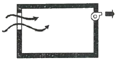
- 화장실
- 수술실
- 주방
- 욕실
(정답률: 82%)
12. 음에 관한 설명으로 옳지 않은 것은?
- 음의 높이는 음의 주파수에 따라 달라진다.
- 음의 크기는 진폭이 큰 음이 진폭이 작은 음보다 크게 느껴진다.
- 음의 크기를 객관적인 물리적 양의 개념으로 표현하기 위한 단위로 손(sone)이 있다.
- 큰 소리와 작은 소리를 동시에 들을 때 큰 소리만 들리고 작은 소리는 들리지 않는 현상을 마스킹 효과(masking effect)라고 한다.
(정답률: 60%)
13. 도서관의 배치계획에 관한 설명으로 옳지 않은 것은?
- 지역사회의 중심적 이용이 편리한 부지를 선정한다.
- 이용자, 직원 및 서적의 출입구를 각각 구분한다.
- 모듈러 플래닝은 열람실과 서고에만 적용된다.
- 열람실은 직사광선이 들어오는 것을 피한다.
(정답률: 66%)
14. 철근콘크리트 구조물의 철근 정착위치에 관한 설명으로 옳지 않은 것은?
- 보의 주근은 기둥에 정착
- 바닥철근은 보 또는 벽체에 정착
- 기둥의 주근은 보에 정착
- 지중보의 주근은 기초 또는 기둥에 정착
(정답률: 56%)
15. 조립식구조(P.C)의 접합부(joint)가 우선적으로 갖추어야 할 요구 성능으로 가장 거리가 먼 것은?
- 내화성
- 기밀성
- 방수성
- 구조 일체성
(정답률: 66%)
16. 학교운영방식 중 교과교실형(V형)에 관한 설명으로 옳지 않은 것은?
- 모든 교실에 특정교과를 위해서 사용되고 일반교실은 없다.
- 교과목에 필요한 시설의 질을 높일 수 있다.
- 학생들의 이동이 심하므로 동선설계에 유의해야 한다.
- 초등학교 저학년에 대해 가장 권장할 만한 형이다.
(정답률: 80%)
17. 일사 계획에 관한 설명으로 옳지 않은 것은?
- 특수유리나 루버 등을 활용하여 일사를 조절한다.
- 건물 주변에 활엽수 보다는 침엽수를 심는 것이 유리하다.
- 겨울철의 난방 부하를 줄이기 위해 직달일사를 최대한 도입해야 한다.
- 난방 기간 중에 최대의 일사를 받기 위해서는 남향이 유리하다.
(정답률: 77%)
18. 인체의 열적 쾌적감에 영향을 미치는 환경요소에 속하지 않는 것은?
- 기온
- 공기의 청정도
- 기류
- 습도
(정답률: 74%)
19. 레스토랑의 서비스 방식에 따른 평면형식에 해당하지 않는 것은?
- 셀프 서비스 레스토랑
- 카운터 서비스 레스토랑
- 테이블 서비스 레스토랑
- 페이싱 서비스 레스토랑
(정답률: 75%)
20. 주택의 평면계획에 관한 설명으로 옳지 않은 것은?
- 거실은 주거의 중심을 두고 응접실과 객실은 현관 가까이 둔다.
- 침실은 되도록 남향을 피하고 조용한 곳에 둔다.
- 주택의 규모에 맞도록 거실, 식당, 부엌의 연결과 분리를 고려하여 공용공간을 배치한다.
- 공간은 필요한 기구와 사용하는 사람의 행동범위 등을 고려하여 정한다.
(정답률: 74%)
2과목: 위생설비
21. 위생기구의 동시사용률은 기구의 수량과 어떤 관계가 있는가?
- 기구수와 관계없다.
- 기구수가 증가하면 커진다.
- 기구수가 증가하면 작아진다.
- 기구수가 증가하면 처음에는 커지다가 작아진다.
(정답률: 67%)
22. 급탕설비에 있어서 순환 펌프 순환수량을 산출 하는데 필요한 값이 아닌 것은?
- 배관 길이
- 급탕 사용수량
- 급탕과 반탕의 온도차
- 배관 단위길이당 열손실량
(정답률: 45%)
23. 급탕설비에서 급탕기기의 부속장치에 관한 설명으로 옳지 않은 것은?
- 온수탱크 상단에는 배수밸브를, 하부에는 진공방지밸브를 설치하여야 한다.
- 안전밸브와 팽창탱크 및 배관 사이에는 차단밸브나 체크밸브 등 어떠한 밸브도 설치되어서는 안 된다.
- 밀폐형 가열장치에는 일정 압력 이상이면 압력을 도피시킬 수 있도록 도피밸브나 안전밸브를 설치한다.
- 온수탱크의 보급수관에는 급수관의 압력변화에 의한 환탕의 유입을 방지하도록 역류방지밸브를 설치한다.
(정답률: 71%)
24. 중앙식 급탕방식에 관한 설명으로 옳지 않은 것은?
- 배관에 의해 필요 개소에 급탕할 수 있다.
- 급탕 개수마다 가열기의 설치 스페이스가 필요하다.
- 기구의 동시이용률을 고려하여 가열장치의 총용량을 적게 할 수 있다.
- 호텔, 병원 등 급탕 개소가 많고 소요 급탕량도 많이 필요한 대규모 건축물에 채용된다.
(정답률: 71%)
25. 압력탱크방식 급수법에 관한 설명으로 옳은 것은?
- 취급이 비교적 쉽고 고장도 없다.
- 전력 차단 시에는 사용할 수 없다.
- 항상 일정한 수압을 유지할 수 있다.
- 고가탱크방식에 비하여 관리비용이 저렴하고 저양정의 펌프를 사용한다.
(정답률: 59%)
26. 다음 그림에서 Ⓐ 부분의 통기관의 명칭은?
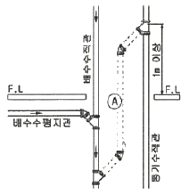
- 각개통기관
- 신정통기관
- 회로통기관
- 결합통기관
(정답률: 75%)
27. 수도직결방식 급수설비에서 수도본관에서 1층에 설치된 샤워기까지의 높이가 2m 이고, 마찰손실압력이 20kPa, 수도본관의 수압이 150kPa 인 경우 샤워기 입구에서의 수압은?
- 약 110kPa
- 약 130kPa
- 약 150kPa
- 약 170kPa
(정답률: 38%)
28. 역류를 방지하여 오염으로부터 상수계통을 보호하기 위한 방법으로 적절하지 않은 것은?
- 토수구 공간을 둔다.
- 역류방지밸브를 설치한다.
- 대기압식 또는 가압식 진공브레이커를 설치한다.
- 수압이 0.4MPa을 초과하는 계통에는 감압밸브를 부착한다.
(정답률: 66%)
29. 우라나라의 아파트, 주택에서 주로 사용되는 대변기 급수방식은?
- 세락식
- 로 탱크식
- 세정밸브식
- 하이 탱크식
(정답률: 71%)
30. 급탕배관의 설계 및 시공상의 주의점에 관한 설명으로 옳지 않은 것은?
- 배관에는 관의 신축을 방해받지 않도록 신축이음쇠를 설치한다.
- 상향배관의 경우 급탕관은 상향 구배, 반탕관은 하향 구배로 한다.
- 하향배관의 경우는 급탕관은 하향 구배, 반탕관은 상향 구배로 한다.
- 배관은 균등한 구배로 하고 역구배나 공기 정체가 일어나기 쉬운 배관 등을 피한다.
(정답률: 63%)
31. BOD 제거율(%)의 산출 공식으로 옳은 것은?
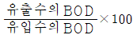
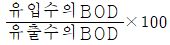
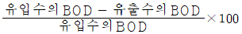
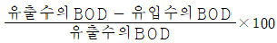
(정답률: 76%)
32. 배수배관의 관경과 구배에 관한 설명으로 옳지 않은 것은?
- 배수관 관경이 클수록 자기세정 작용이 커진다.
- 배관의 구배가 너무 크면 유수가 빨리 흘러 고형물이 남게 된다.
- 배관의 구배가 작으면 고형물을 밀어낼 수 있는 힘이 작아진다.
- 배수관 관경이 필요 이상으로 크면 오히려 배수의 능력이 저하된다.
(정답률: 58%)
33. 층류와 난류에 관한 설명으로 옳지 않은 것은?
- 층류영역에서 난류영역 사이를 천이영역이라고 한다.
- 층류에서 난류로 천이할 때의 유속을 평균유속이라고 한다.
- 레이놀즈 수에 의해 관내의 흐름이 층류인지 난류인지를 판별할 수 있다.
- 유체 유동 중 층류는 유체분자가 규칙적으로 층을 이루면서 흐르는 것이다.
(정답률: 65%)
34. 물의 특성에 관한 설명으로 옳지 않은 것은?
- 물은 비압축성 유체이다.
- 물에는 체적의 탄성이 없다.
- 물의 점성은 온도가 상승하면 감소한다.
- 순수한 물이 얼게 되면 약 4%의 체적감소가 발생한다.
(정답률: 61%)
35. 배관설비에 사용되는 신축 이음쇠에 속하지 않는 것은?
- 루프형
- 슬리브형
- 벨로즈형
- 플랜지형
(정답률: 68%)
36. 내경이 150mm인 직선배관에 0.06m3/sec 의 물이 흐를 때, 배관길이가 50m일 경우 관내 마찰손실수두는? (단, 마찰손실계수 f = 0.03)
- 1.2m
- 3.4m
- 5.9m
- 11.8m
(정답률: 52%)
37. 다음 중 간접배수로 하지 않아도 되는 것은?
- 세탁기에서의 배수
- 세면기에서의 배수
- 냉각탑에서의 배수
- 식기세정기에서의 배수
(정답률: 72%)
38. 다음 중 위생설비를 유니트화하여 얻는 이점과 가장 관계가 먼 것은?
- 공기의 단축
- 품질의 향상
- 공장 작업의 최소화
- 현장 작업의 안정성 향상
(정답률: 54%)
39. 통기설비에 관한 설명으로 옳지 않은 것은?
- 신정통기관의 관경은 배수수직관의 관경보다 작게 해서는 안된다.
- 각개통기관의 관경은 그것이 접속되는 배수관 관경의 1/2 이상으로 한다.
- 소벤트 시스템은 특수통기방식으로 통기수직관을 사용한 루프통기방식의 일종이다.
- 간접배수계통의 통기관은 다른 통기계통에 접속하지 말고 단독으로 대기 중에 개구한다.
(정답률: 45%)
40. 원심식 펌프로 회전차 주위에 디퓨저인 안내 날개를 가지고 있는 펌프는?
- 터빈펌프
- 기어펌프
- 피스톤펌프
- 볼류트펌프
(정답률: 76%)
3과목: 공기조화설비
41. 습공기의 건구온도와 습구온도를 알 경우 습공기선도 상에서 파악할 수 없는 것은?
- 비체적
- 노점온도
- 열수분비
- 수증기분압
(정답률: 46%)
42. 저압증기배관에 관한 설명으로 옳지 않은 것은?
- 증기주관 곡부에는 밴드관을 사용한다.
- 순구배 배관의 말단부에는 관말트랩을 설치한다.
- 배관의 분기부에는 밸브를 설치하여서는 안된다.
- 분류·합류에 T이음쇠를 이용하는 경우는 90° T자형을 이용하지 않는다.
(정답률: 54%)
43. 원형덕트와 장방형덕트의 환산식으로 옳은 것은? (단, d : 원형덕트의 직경 또는 환산 직경, a : 장방향덕트의 장변길이, b : 장방향덕트의 단변길이)
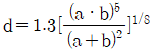
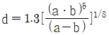
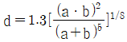
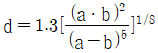
(정답률: 62%)
44. 펌프의 운전점 결정방법으로 옳은 것은?
- 펌프의 정양정이 최소가 되는 점으로 결정된다.
- 펌프의 양정곡선이 교점으로 결정된다.
- 펌프의 축동력곡선과 효율곡선의 교점으로 결정된다.
- 펌프의 양정곡선과 배관의 저항곡선의 교점으로 결정된다.
(정답률: 53%)
45. 다음의 송풍기 풍량제어 방법 중 축동력이 가장 많이 소요되는 것은?
- 회전수제어
- 흡입베인제어
- 흡입댐퍼제어
- 토출댐퍼제어
(정답률: 62%)
46. 다음 중 다담펌프를 사용하는 가장 주된 목적은?
- 흡입양정이 큰 경우
- 토출량을 줄이기 위한 경우
- 높은 토출양정이 필요한 경우
- 수중에 펌프를 설치하는 경우
(정답률: 70%)
47. 다음과 같은 조건에서 실체적 3000m3 인 어떤 실의 틈새바람에 의한 냉방부하는?
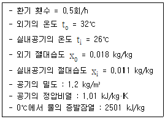
- 약 2592W
- 약 7560W
- 약 11784W
- 약 14523W
(정답률: 56%)
48. 냉방부하의 발생요인 중 현열부하만 발생하는 것은?
- 인체의 발생열량
- 유리로부터의 취득열량
- 극간풍에 의한 취득열량
- 외기의 도입에 의한 취득열량
(정답률: 70%)
49. 냉각탑 주위의 배관에 관한 설명으로 옳지 않은 것은?
- 냉각탑 주의의 세균 감염에 유의하여야 한다.
- 냉각탑 입구측 배관에는 스트레이너를 설치하여야 한다.
- 냉각수의 출입구측 및 보급수관의 입구측에 플렉시블 조인트를 설치한다.
- 냉각탑을 중간기 및 동절기에 사용하는 경우 냉각수의 동결방지 및 냉각수온도 제어를 고려한다.
(정답률: 62%)
50. 벽체의 열관류율에 관한 설명으로 옳지 않은 것은?
- 열관류율이 높을수록 단열성능이 좋다.
- 벽체 구성재료의 열전도율이 높을수록 열관류율은 커진다.
- 벽체에 사용되는 단열재의 두께가 두꺼울수록 열관류율은 낮아진다.
- 열관류율이 높을수록 외벽의 실내측 표면에 결로 발생 우려가 커진다.
(정답률: 61%)
51. 습공기에 관한 설명으로 옳은 것은?
- 습공기를 가열하면 상대습도가 증가한다.
- 습공기를 가열하면 상대습도가 감소한다.
- 습공기를 가열하면 절대습도가 증가한다.
- 습공기를 가열하면 절대습도가 감소한다.
(정답률: 66%)
52. 열펌프(heat pump)에 관한 설명으로 옳은 것은?
- 공기조화에 주로 냉방용으로 응용된다.
- 냉동사이클에서 응축기의 발열량을 이용하기 위한 것이다.
- GHP(Gas Engine Heat Pump)는 흡수식 냉동기의 원리를 이용한 펌프이다.
- 냉동기를 냉각목적으로 할 경우의 성적계수보다 열펌프로 사용될 경우의 성적계수가 작다.
(정답률: 45%)
53. 온도 35℃의 외기 30%와 26℃의 환기 70%를 단열혼합하는 경우 혼합공기의 온도는?
- 27.9℃
- 28.7℃
- 30.5℃
- 32.3℃
(정답률: 67%)
54. 덕트 내에 흐르는 공기의 풍속이 13m/s, 정압이 20mmAq일 때 전압은? (단, 공기의 밀도는 1.2 kg/m3 이다.)
- 20.34 mmAq
- 28.84 mmAq
- 30.35 mmAq
- 36.25 mmAq
(정답률: 53%)
55. 덕트 부속기기 중 스플릿 댐퍼에 관한 설명으로 옳지 않은 것은?
- 주덕트의 압력강하가 적다.
- 정밀한 풍량조절이 용이하다.
- 폐쇄용으로는 사용이 곤란하다.
- 분기부에 설치하여 풍량조절용으로 사용된다.
(정답률: 48%)
56. 덕트의 치수결정법 등 등속법에 관한 설명으로 옳지 않은 것은?
- 덕트를 통해 먼지나 산업용 분말을 이송시키는데 적당하다.
- 덕트 내의 풍속을 일정하게 유지할 수 있도록 덕트 치수를 결정하는 방법이다.
- 송풍기 용량을 구하기 위해서는 전체 구간의 압력 손실을 구해야 하는 번거로움이 있다.
- 미분탄 및 시멘트 분말의 이송에는 덕트 내에 분말이 침적되지 않도록 풍속 5m/s 로 설계한다.
(정답률: 49%)
57. 유체의 흐름이 밸브의 아래에서 위로 흐르며 유량조절용으로 사용되는 밸브는?
- 볼밸브
- 체크밸브
- 게이트밸브
- 글로브밸브
(정답률: 55%)
58. 공기의 가습에 관한 설명으로 옳은 것은?
- 온수를 분사하면 공기온도는 올라간다.
- 스팀을 계속 분사하면 상대습도가 100%를 초과하게 된다.
- 초음파 가습기로 분무할 경우 공기온도는 변화하지 않는다.
- 공기온도와 같은 순환수로 가습할 경우, 공기의 엔탈피 변화는 거의 없다.
(정답률: 51%)
59. 용량이 400kW인 터보 냉동기에 순환되는 냉수량은? (단, 냉동기 입구의 냉수온도 12℃, 출구의 냉수온도 6℃, 물의 비열 4.2 kJ/kg·K)
- 46.2 m3/h
- 57.1 m3/h
- 83.6 m3/h
- 98.6 m3/h
(정답률: 57%)
60. 공기조화방식 중 유인유닛방식에 관한 설명으로 옳지 않은 것은?
- 각 유닛마다 수배관을 해야 하므로 누수의 우려가 있다.
- 고속덕트를 사용하므로 덕트 스페이스를 작게 할 수 있다.
- 각 유닛마다 제어가 가능하므로 개별실 제어가 가능하다.
- 중앙공조기는 1차, 2차 공기를 처리해야 하므로 규모가 커야 한다.
(정답률: 49%)
4과목: 소방 및 전기설비
61. 무대부에 개방형 스프링클러 헤드를 수평거리 1.7m, 정방형으로 설치하는 경우 헤드간 거리는?
- 1.8m
- 2.1m
- 2.4m
- 3.4m
(정답률: 49%)
62. 연결송수관설비에 관한 설명으로 옳은 것은?
- 송수구는 지면으로부터 1m이상 1.5m 이하의 위치에 설치한다.
- 수직배관은 내화구조로 구획되지 않은 계단실 또는 파이프덕트 등에 설치한다.
- 방수구는 특정소방대상물의 층마다 설치하되, 공동주택과 업무시설의 1층, 2층에는 설치하지 않는다.
- 배관은 지면으로부터의 높이가 31m이상인 특정소방대상물 또는 지상 11층 이상인 특정소방대상물에 있어서는 습식설비로 한다.
(정답률: 52%)
63. 습식스프링클러설비 및 부압식스프링클러설비 외의 설비에 하향식 스프링클러헤드를 설치할 수 있는 경우가 아닌 것은?
- 개방형 스프링클러헤드를 사용하는 경우
- 드라이펜던트 스프링클러헤드를 사용하는 경우
- 스프링클러헤드의 설치장소가 동파의 우려가 없는 곳인 경우
- 수원이 건축물의 최상층에 설치된 헤드보다 높은 위치에 설치된 경우
(정답률: 54%)
64. 변압기에 관한 설명으로 옳은 것은?
- 전압을 강압(down)시킬 때만 사용한다.
- 건식 변압기는 화재의 위험성이 있는 장소에 사용이 곤란하다.
- 몰드 변압기는 내수·내습성이 우수하나 소형, 경량화가 불가능하다는 단점이 있다.
- 1차측 코일과 2차측 코일의 권수비는 1차측 코일과 2차측 코일의 교류전압의 비와 같다.
(정답률: 57%)
65. v = 100sin(314t + 60°)[V]인 교류전압의 주기는?
- 0.017초
- 0.02초
- 50초
- 60초
(정답률: 49%)
66. 경사도가 30°이하인 에스컬레이터의 공칭 속도는 최대 얼마 이하이어야 하는가?(오류 신고가 접수된 문제입니다. 반드시 정답과 해설을 확인하시기 바랍니다.)
- 0.25 m/s
- 0.5 m/s
- 0.75 m/s
- 1 m/s
(정답률: 50%)
67. 75[kVA] 단상변압기 2대를 V결선한 경우 3상변압기의 출력은?
- 90[kVA]
- 110[kVA]
- 130[kVA]
- 150[kVA]
(정답률: 52%)
68. 어떤 회로의 저항이 10[Ω]이고 2[A]의 전류가 흐른다면 전압은?
- 5[V]
- 8[V]
- 12[V]
- 20[V]
(정답률: 62%)
69. 차동식 분포형 화재감지기에 속하지 않는 것은?
- 스폿식
- 공기관식
- 열전대식
- 열반도체식
(정답률: 59%)
70. 부하설비의 역률을 개선하기 위해 설치하는 곳은?
- 다이오드
- 영상 변류기
- 진상용 콘덴서
- 유도전압 조정기
(정답률: 61%)
71. 옥내소화전설비를 설치하여야 하는 특정소방대상물에서 각 층마다 옥내소화전을 5개 설치한 경우, 옥내소화전설비의 수원의 저수량은 최소 얼마 이상이 되도록 하여야 하는가?(2021년 04월 01일 변경된 규정 적용됨)
- 3m3
- 5.2m3
- 10.4m3
- 20m3
(정답률: 63%)
72. 다음의 제어동작 중 ON-FF 동작이라고도 하며, 항상 목표치와 제어결과가 일치하지 않는 동작간극을 일으키는 결점이 있는 것은?
- PI제어동작
- 비례제어동작
- 2위치 제어동작
- 다위치 제어동작
(정답률: 71%)
73. 축전지의 충전방식 중 비교적 짧은 시간에 보통 충전전류의 2~3배의 전류로 충전하는 방식은?
- 보통충전
- 급속충전
- 부동충전
- 균등충전
(정답률: 79%)
74. 소화기구의 능력단위에 관한 설명으로 옳지 않은 것은?
- 소형소화기의 능력단위는 1단위 이하이다.
- 대형소화기의 능력단위는 A급 10단위 이상이다.
- 대형소화기의 능력단위는 B급 20단위 이상이다.
- 소화약제 외의 것을 이용한 간이소화용구의 능력단위는 0.5단위이다.
(정답률: 50%)
75. 다음의 회로에서 a, b간의 합성 정전용량은?
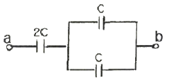
- C
- 2C
- 3C
- 4C
(정답률: 64%)
76. 인터폰 설비의 접속방식에 따른 분류에 속하지 않는 것은?
- 모자식
- 상호식
- 교차식
- 복합식
(정답률: 58%)
77. 전기력선에 관한 설명으로 옳지 않은 것은?
- 전기력선은 교차하지 않는다.
- 양전하에서 나와 음전하로 들어간다.
- 전기력선의 방향은 등전위면과 일치한다.
- 전기력선의 밀도는 그 점에서의 전기장의 세기이다.
(정답률: 48%)
78. 유접점 시퀀스 제어회로에 관한 설명으로 옳지 않은 것은?
- 온도특성이 양호하다.
- 개폐부하의 용량이 크다.
- 전기적 노이즈에 대하여 안정적이다.
- 기계적 진동, 충격 등에 비교적 강하다.
(정답률: 47%)
79. 전기력이 미치고 있는 주위공간을 의미하는 용어는?
- 자로
- 자계
- 전로
- 전계
(정답률: 52%)
80. 다음 중 조명률에 영향을 끼치는 요소와 가장 거리가 먼 것은?
- 방의 크기
- 출입문의 위치
- 등기구의 배광
- 천장의 반사율
(정답률: 77%)
5과목: 건축설비관계법규
81. 문화 및 집회시설 중 공연장의 개별관람실의 출구를 관람실별로 2개소 이상 설치해야 하는 개별 관림실의 바닥면적 기준은?
- 150 m2 이상
- 300 m2 이상
- 450 m2 이상
- 600 m2 이상
(정답률: 57%)
82. 건축물의 에너지절약설계기준에 따른 기계부분의 권장사항 내용으로 옳지 않은 것은?
- 열원설비는 부분부하 및 전부하 운전효율이 좋은 것을 선정한다.
- 위생설비 급탕용 저탕조의 설계온도는 55℃이하로 하고 필요한 경우네느 부스터히터 등으로 승온하여 사용한다.
- 난방기기, 냉방기기, 냉동기, 송풍기, 펌프 등은 부하조건에 따라 최고의 성능을 유지할 수 있도록 대수분할 또는 비례제어운전이 되도록 한다.
- 청정실 등 특수 용도의 공간 외에는 실내 공기의 오염도가 허용치의 1.5배를 초과하지 않는 범위 내에서 최대한의 외기도입이 가능하도록 계획한다.
(정답률: 59%)
83. 공동주택과 오피스텔의 난방설비를 개별난방 방식으로 하는 경우에 관한 기준내용으로 옳지 않은 것은?
- 보일러의 연도는 내화구조로서 공동연도로 설치할 것
- 오피스텔의 경우에는 난방구획을 방화구획으로 구획할 것
- 보일러의 윗부분에는 그 면적이 0.5m2 이상인 환기창을 설치할 것
- 보일러실의 윗부분과 아랫부분에는 공기 흡입구 및 배기구를 항상 닫혀있도록 설치할 것
(정답률: 62%)
84. 건축물을 건축하거나 대수선하는 경우 해당 건축물의 설계자가 국토교통부령으로 정하는 구조기준 등에 따라 그 구조의 안전을 확인한 건축물 중 건축물의 건축주가 해당 건축물의 설계자로부터 구조 안전의 확인 서류를 받아 착공신고 시 허가권자에게 제출하여야 하는 대상 건축물 기준으로 옳지 않은 것은? (단, 표준설계도서에 따라 건축하는 건축물은 제외)
- 단독주택
- 높이가 13m 이상인 건축물
- 처마높이가 8m 이상인 건축물
- 기둥과 기둥 사이의 거리가 10m 이상인 건축물
(정답률: 51%)
85. 다음의 창문 등의 차면시설의 설치에 관한 기준 내용 중 ( ) 안에 알맞은 것은?
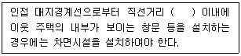
- 1m
- 2m
- 3m
- 4m
(정답률: 64%)
86. 건축법령상 고층건물의 정의로 옳은 것은?
- 층수가 30층 이상이거나 높이가 90m 이상인 건축물
- 층수가 30층 이상이거나 높이가 120m 이상인 건축물
- 층수가 50층 이상이거나 높이가 150m 이상인 건축물
- 층수가 50층 이상이거나 높이가 200m 이상인 건축물
(정답률: 67%)
87. 다음은 특정소방대상물의 소방시설 설치의 면제에 관한 기준 내용이다. ( ) 안에 알맞은 것은?
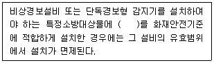
- 비상방송설비
- 자동화재탐지설비
- 자동화재속보설비
- 무선통신보조설비
(정답률: 68%)
88. 건축물의 출입구에 설치하는 회전문에 관한 기준 내용으로 옳지 않은 것은?
- 계단이나 에스컬레이터로부터 2m 이상의 거리를 둘 것
- 출입에 지장이 없도록 일정한 방향으로 회전하는 구조로 할 것
- 회전문의 회전속도는 분당회전수가 10회를 넘지 아니하도록 할 것
- 회전문의 중심축에는 회전문과 문틀 사이의 간격을 포함한 회전문날개 끝부분까지의 길이는 140cm 이상이 되도록 할 것
(정답률: 69%)
89. 다음 중 건축기준의 허용오차로 옳지 않은 것은?
- 건축선의 후퇴거리 : 3% 이내
- 건축물의 벽체두께 : 3% 이내
- 건축물의 출구너비 : 5% 이내
- 인접건축물과의 거리 : 3% 이내
(정답률: 60%)
90. 급수·배수·환기·난방설비를 설치하는 경우 건축기계설비기술사 또는 공조냉동기계기술사의 협력을 받아야 하는 건축물에 속하지 않는 것은?
- 아파트
- 의료시설로서 해당 용도에 사용되는 바닥면적의 합계가 2000m2 인 건축물
- 업무시설로서 해당 용도에 사용되는 바닥면적의 합계가 2000m2 인 건축물
- 숙박시설로서 해당 용도에 사용되는 바닥면적의 합계가 2000m2 인 건축물
(정답률: 66%)
91. 6층 이상의 건축물로서 판매시설의 거실에 설치하는 배연설비에 관한 기준 내용으로 옳지 않은 것은? (단, 피난층의 거실이 아닌 경우)
- 배연창의 유효면적은 최소 1.5m2 이상으로 할 것
- 배연구는 예비전원에 의하여 열 수 있도록 할 것
- 배연창의 상변과 천장 또는 반자로부터 수직거리가 0.9m 이내일 것
- 배연구는 연기감지기 또는 열감지기에 의하여 자동으로 열 수 있는 구조로 할 것
(정답률: 55%)
92. 특정소방대상물이 아파트인 경우 특급 소방안전관리대상물 기준으로 옳은 것은? (단, 층수는 지하층을 제외한 층수이다.)
- 30층 이상이거나 지상으로부터 높이가 90m 이상인 아파트
- 30층 이상이거나 지상으로부터 높이가 120m 이상인 아파트
- 50층 이상이거나 지상으로부터 높이가 150m 이상인 아파트
- 50층 이상이거나 지상으로부터 높이가 200m 이상인 아파트
(정답률: 47%)
93. 건축물에 설치하는 굴뚝의 옥상 돌출부는 지붕면으로부터의 수직거리를 최소 얼마 이상으로 하여야 하는가?
- 0.5m 이상
- 0.7m 이상
- 0.9m 이상
- 1.0m 이상
(정답률: 65%)
94. 비상콘센트설비를 설치하여야 하는 특정소방대상물 기준으로 옳지 않은 것은? (단, 위험물 저장 및 처리 시설 중 가스시설 또는 지하구는 제외)
- 지하가 중터널로서 길이가 500m 이상인 것
- 층수가 11층 이상인 특정소방대상물의 경우에는 11층 이상의 층
- 판매시설로서 해당 용도로 사용되는 부분의 바닥면적의 합계가 1000m2 이상인 것
- 지하층의 층수가 3층 이상이고 지하층의 바닥면적의 합계가 1000m2 이상인 것은 지하층의 모든 층
(정답률: 45%)
95. 다음의 소방시설 중 피난구조설비에 속하지 않는 것은?
- 공기호흡기
- 비상조명등
- 피난유도선
- 비상콘센트설비
(정답률: 67%)
96. 바닥면적이 100m2인 초등학교 교실에 채광을 위하여 설치하여야 하는 창문 등의 면적은 최소 얼마 이상이어야 하는가? (단, 거실의 용도에 따른 조도기준 이상의 조명장치를 설치하지 않은 경우)
- 5m2
- 10m2
- 20m2
- 50m2
(정답률: 53%)
97. 건축물의 냉방설비에 대한 설치 및 설계기준상 다음과 같이 정의되는 용어는?
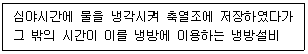
- 전체축냉방식
- 빙축역실 냉방설비
- 수축열식 냉방설비
- 잠열축열식 냉방설비
(정답률: 44%)
98. 특별시나 광역시에 건축하는 경우 특별시장이나 광역시장의 허가를 받아야 하는 대상건축물의 층수 기준은?
- 층수가 10층 이상인 건축물
- 층수가 15층 이상인 건축물
- 층수가 21층 이상인 건축물
- 층수가 31층 이상인 건축물
(정답률: 70%)
99. 다음 건축물의 용도 중 6층 이상의 거실면적의 합계가 3000m2인 경우 설치하여야 하는 승용 승강기의 최소 대수가 가장 적은 것은? (단, 8인승 승강기의 경우)
- 의료시설
- 판매시설
- 숙박시설
- 문화 및 집회시설 중 공연장
(정답률: 53%)
100. 다음 중 건축법령에 따른 용도별 건축물의 종류가 옳지 않은 것은?
- 단독주택 - 다중주택
- 묘지관련시설 - 장례식장
- 문화 및 집회시설 - 수족관
- 자원순환 관련시설 – 고물상
(정답률: 55%)